SEE UP Build Session #01 · startap hakaton
STVARAJ
AI je ubrzao sve. Sada je red na nas da stvaramo.
Subota: od problema do prve verzije.
Nedelja: od prve verzije do prvih kupaca.
Tema je slobodna: kreni od problema koji ti je blizak. Mentori i AI alati su tu oba dana.
- 28–29. novembarsubota i nedelja
- CDT Hub, 6. spratKneza Miloša 12, Beograd
- Prijave do 19. novembra
Nagrade za prva tri tima.
Novac za prva dva mesta, a za prva tri tima i mogućnost nastavka u okviru SEE UP-a.
- 1. mesto100.000dinara
- 2. mesto40.000dinara
Prva tri tima
Podrška SEE UP-a
Mogućnost nastavka u okviru SEE UP-a: mentorstvo, pomoć u osnivanju startapa, razvoju proizvoda i dolasku do prvih kupaca, uz veze sa osnivačima i partnerima, pa i ulazak u SEE UP kohortu. Posle 30 dana proveravamo dokle ste stigli.
Microsoft Azure krediti
Mogućnost kredita kroz Microsoft Azure Sponsorship, za cloud i AI servise na Azure-u, od servera i baza podataka do AI modela.
Svaki tim
Knjiga „Stvaraj“
Primerak knjige „Stvaraj“ Milovana Dekića, u izdanju izdavačke kuće Finesa, bez obzira na plasman. Po njenom metodu radite ceo vikend, od problema i hipoteza do prvih kupaca, a knjiga ostaje kao vodič i kad se vikend završi.
Partneri
Alat sa kojim timovi grade, prostor u kom radimo ceo vikend i izdavač knjige „Stvaraj“.

Lovable pravi web aplikacije iz opisa na običnom jeziku. Opišeš šta aplikacija treba da radi, a Lovable napiše kod, poveže bazu i objavi je. Timovi ga na vikendu koriste da za nekoliko sati dođu do prve verzije koju mogu da pokažu korisnicima i žiriju.
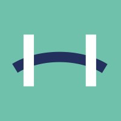
CDT HubCDT Hub je prostor Centra za digitalnu transformaciju Privredne komore Srbije, mesto gde se sreću IT kompanije, startapi, investitori i tradicionalna privreda. Kod njih radimo oba dana: Kneza Miloša 12, Beograd, 6. sprat.
Izdavačka kuća Finesa objavila je knjigu „Stvaraj“ Milovana Dekića, po čijoj metodologiji radimo ceo vikend. Svaki tim dobija primerak knjige.
Imate alat koji pomaže u nekom od pet koraka? Pišite na emilija@seeup.net.
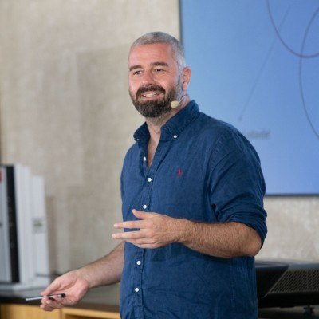
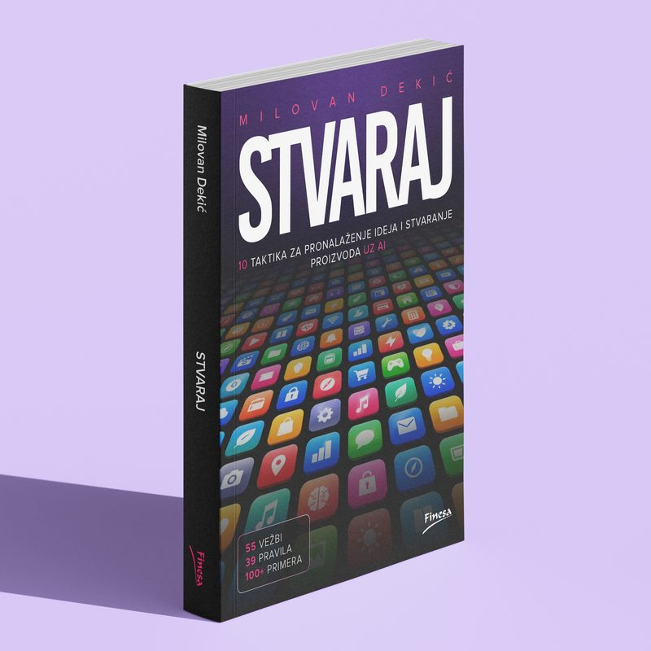
Gostujući predavač
Milovan Dekić, autor knjige „Stvaraj“
Milovan se bavi istraživanjem korisnika: kako ljudi stvarno koriste proizvode i zašto. Bio je User Research Lead u Nordeusu, gde je timovima koji prave igre pomagao da odluke o proizvodu donose na osnovu istraživanja. Pre toga je predavao sociologiju na Univerzitetu u Beogradu.
Sa Markom Jevtićem napisao je „Design Thinking“, knjigu koja je izašla u deset izdanja. Njegova nova knjiga „Stvaraj“, u izdanju izdavačke kuće Finesa, donosi 10 taktika za pronalaženje ideja i stvaranje proizvoda uz AI, sa 55 vežbi i preko 100 primera. Po njoj radimo ceo vikend, a primerak dobija svaki tim.
Subota, 09:45–10:45
Uvodno predavanje: kako se od ideje dođe do pravog problema, kako se proveravaju pretpostavke i kako se slaže pitch deck.
Kod više nije usko grlo. Problem jeste.
AI je ubrzao i pojeftinio pravljenje softvera, pa radna verzija danas nastaje za vikend. Najteže je ostalo isto: naći pravi problem. Oko nas su milioni potencijalnih firmi, a tvoja najverovatnije počinje od problema koji ti je blizak, sa posla, fakulteta, iz porodičnog biznisa ili iz nečeg čime se baviš.
Ne moraš da budeš programer.
Dovoljno je da znaš problem. Prvu verziju praviš uz AI alate kao što je Lovable, a mentori su tu oba dana da ti pomognu da ih koristiš i da dođeš do rešenja.
- do 30godina
- do 3u timu, ili sam
- 45mesta
Pet koraka, od problema do prvih kupaca.
Pronađi problem
Ko ga ima, koliko je važan i kako se danas rešava.
Istraži tržište
Ko već rešava isti problem i po čemu ste drugačiji.
Napravi MVP
Najmanja verzija koja radi i koju žiri može sam da proba.
Pronađi prve kupce
Kako dolazite do prvih deset kupaca za 30 dana.
Pitch
Tri minuta prezentacije sa demom, tri minuta pitanja.
Program
Subota 28. novembar
Od problema do prvog MVP-ja
- 09:00
- Registracija i otvaranje
- 09:45
- Milovan Dekić, uvodno predavanje
- 11:00
- Istraživanje problema i tržišta
- 13:00
- Ručak
- 13:45
- Rešenje i razvoj MVP-ja
- 17:30
- Provera napretka sa mentorima
- 18:00
- Rad na projektima, do 23:00
Nedelja 29. novembar
Od MVP-ja do prvih kupaca
- 09:00
- Završavanje MVP-ja
- 11:30
- Testiranje i poslovni model
- 13:15
- Ručak
- 14:00
- Finalizacija i pitch deck
- 16:00
- Rok za predaju projekata
- 17:00
- Finalni pitch pred žirijem
- 19:00
- Proglašenje pobednika
Satnica je okvirna.
Ljudi koji će vam reći šta ne valja.
Mentori su uz timove oba dana i ne ocenjuju one sa kojima su radili. Pokrivaju tri oblasti: proizvod (problem i obim MVP-ja), tehniku (AI alati i razvoj) i biznis (prodaja i prvi kupci).
Mentori
- Srđan ČolakGoodnotes
- Aleksandar IlićGoodnotes
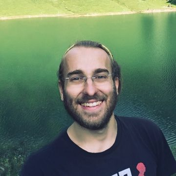
- Darko Pavlovićex Nordeus
- Svetislav GajićValyrion
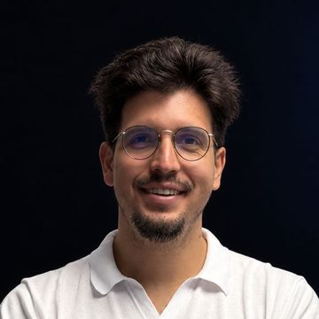
- Balša PopovićValyrion
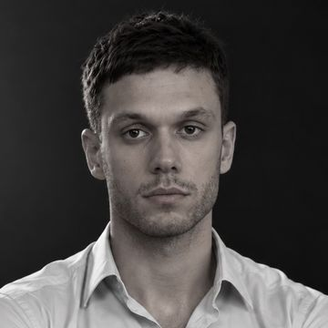
- Miloš MilunovićMicrosoft
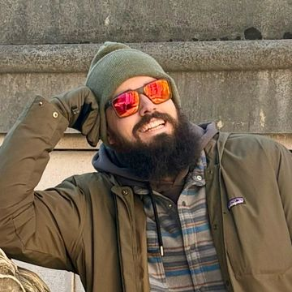
- Danilo VranešAI startap
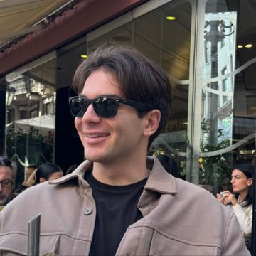
- Milan PajovićBizzllet
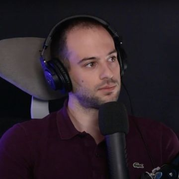
- Vuk VerovićValyrion
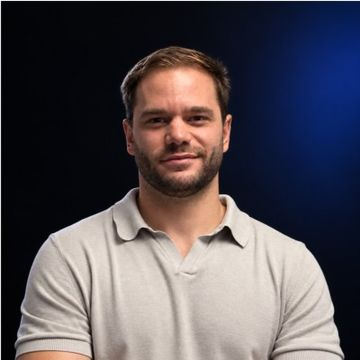
- Aleksa GrujovićFarseer
- Lazar LekićCasper Agents
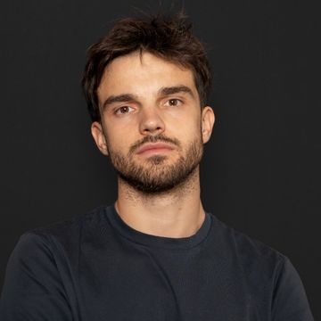
- Sava PavlovićFarmit
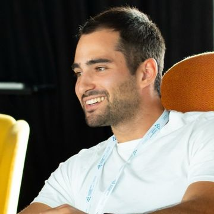
Lista se dopunjuje.
Žiri
Ocenjuje finalni pitch u nedelju.
- Zorana BrankovićBanca Intesa
- Nemanja ĐorđevićPalata nauke
- Predrag NikolićCDT / PKS
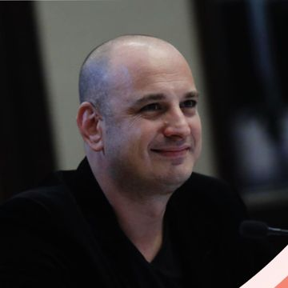
- Igor IlićMicrosoft
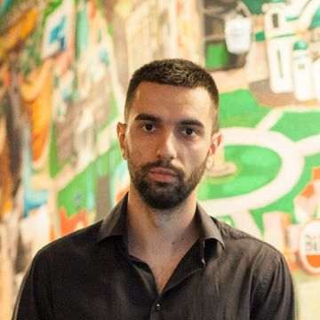
- Marko CarevićAnanas
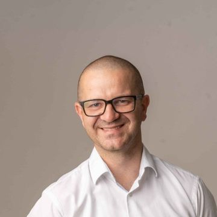
Šta žiri gleda.
Najviše se boduje razumevanje problema, a ne tehnička složenost.
Problem
Da li je stvaran i ko ga ima?
MVP
Da li radi i rešava taj problem?
Konkurencija
Po čemu ste drugačiji od onoga što ljudi već koriste?
Prvi kupci
Kako dolazite do njih u narednih 30 dana?
Poslovni model
Ko plaća i koliko?
Prezentacija
Da li je jasno i u roku?
Ko organizuje.
Privatni akcelerator iz Beograda, fokusiran na prodaju. Startapima pomaže da od prve verzije proizvoda dođu do kupaca i rasta.
seeup.netPitanja pre prijave.
Ako tvoje nije ovde, piši na emilija@seeup.net.
Ne programiram. Ima li smisla da se prijavim?
Ima. Žiri najviše boduje razumevanje problema, ne kod. Prvu verziju praviš uz AI alate kao što je Lovable, a mentori pomažu kad zapne.
Nemam tim. Mogu li da dođem sam?
Možeš. Radiš sam ili u timu od dva do tri člana, a pojedinci se ocenjuju isto kao timovi i imaju isto pravo na pitch.
Koja je tema?
Nema zadate teme. Kreni od problema koji ti je blizak: sa posla, fakulteta, iz porodičnog biznisa ili iz okruženja. Žiri najviše gleda koliko je problem stvaran i da li si ga proverio sa ljudima koji ga imaju.
Nemam ideju. Šta onda?
Ne treba ti ideja, treba ti problem. Kreni od nečega što znaš sa posla, fakulteta ili iz nečije firme. Ako ga nemaš, posle uvodnog predavanja Milovana Dekića znaćeš gde da ga tražiš.
Ko može da se prijavi?
Svi do 30 godina iz cele Srbije: studenti, zaposleni, frilenseri i oni koji tek hoće svoj posao.
Koliko ima mesta?
Do 45 učesnika, u najviše 15 timova. Prijave gledamo kako stižu, pa ne čekaj poslednji dan. Odgovor stiže najkasnije do 23. novembra.
Moram li da budem tu oba dana?
Da, jer su pitch i proglašenje u nedelju. Subota traje od 09:00 do 23:00, nedelja od 09:00 do 19:30.
Ostaje li se preko noći? Ko obezbeđuje smeštaj?
Na hakatonu se ne ostaje preko noći: u subotu se radi do 23:00, a nastavlja se u nedelju u 09:00. Smeštaj ne organizujemo, pa ako dolaziš iz drugog grada, za noć između subote i nedelje snalaziš se sam.
Mogu li da dođem sa projektom koji već radim?
Problem i ideju slobodno ponesi. Postojeće biblioteke, AI alati i servisi su dozvoljeni, ali MVP koji se takmiči pravi se tokom vikenda.
Šta ako ne pobedimo?
Novac dobijaju prva dva tima, a prva tri imaju mogućnost nastavka u okviru SEE UP-a. Svaki tim odlazi sa prvom verzijom proizvoda, pitch deckom i knjigom „Stvaraj“ Milovana Dekića, u izdanju izdavačke kuće Finesa. Pored toga, dva dana radiš sa mentorima koji su gradili proizvode i vode firme, i ti kontakti ostaju i posle vikenda.
Šta da ponesem?
Laptop i punjač. Ako već znaš problem, ponesi i kontakte ljudi koji ga imaju.
Šta ako se prijavim, a ne mogu da dođem?
Javi što pre na emilija@seeup.net. Tvoje mesto ide sledećem sa liste čekanja.
Prijava je otvorena do 19. novembra.
Prijavljuješ se preko Google forme. Najviše vremena vredi potrošiti na opis problema koji poznaješ. Prijave gledamo kako stižu, a odgovor stiže najkasnije do 23. novembra.
Do zatvaranja prijava
Prijave se zatvaraju u četvrtak, 19. novembra 2026, u 23:59.
Prijava je na Google formi i otvara se u novom prozoru. Ako nešto ne radi, piši na emilija@seeup.net.
Prijave su zatvorene.
Rok je bio 19. novembar u 23:59. Odgovor stiže najkasnije do 23. novembra. Pitanja: emilija@seeup.net.